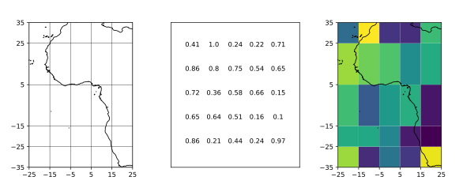
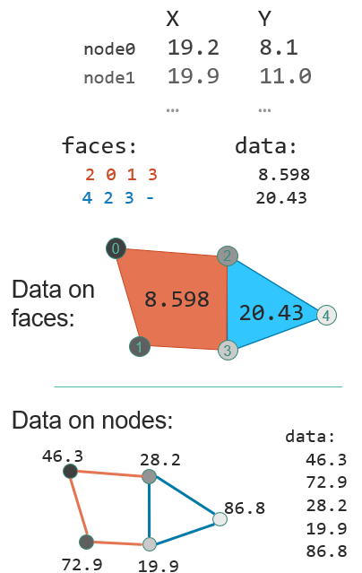
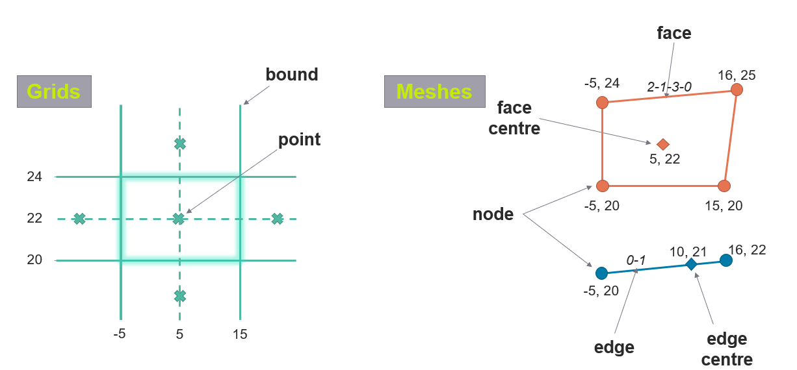
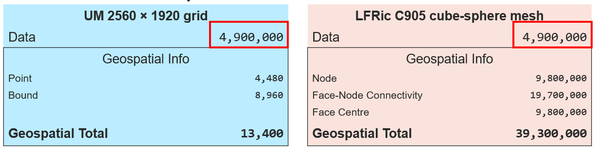
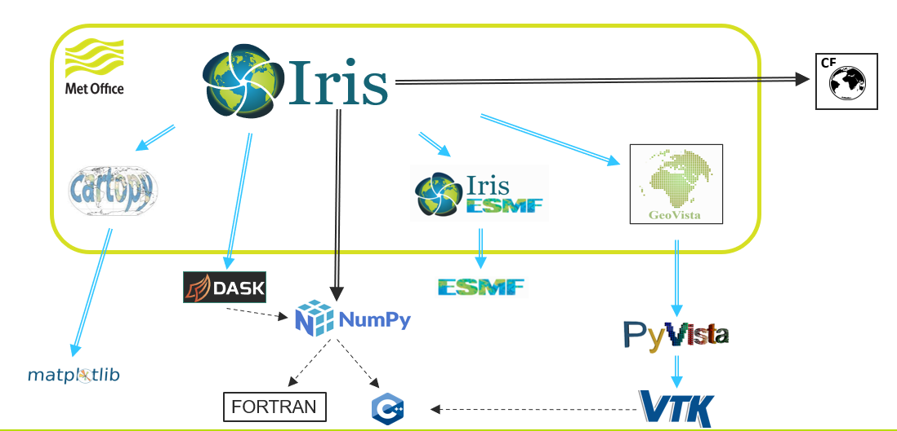
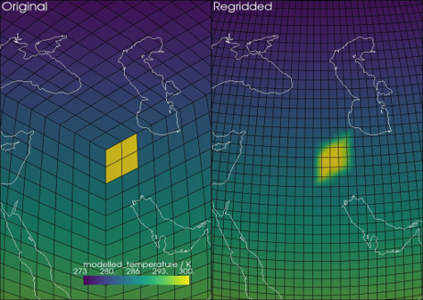

3. Unstructured data with LFRic
This module introduces the unstructured world of meshes which are now used in LFRic.
Aims and objectives
To understand
To be aware of
To become familiar with
The structured world
In a structured grid world:
1D coordinates arrays combine to give multi-D spatial locations
data shape = locations shape
data ‘neighbours’ = spatial ‘neighbours’
data axes = spatial directions e.g. rows west to east, columns north to south
{kind=link}

The unstructured world
In an unstructured mesh world: one convention can describe any layout, even fully irregular layouts
better collaboration better software support
LFRic cubesphere: output as ‘UGRID’ unstructured mesh

{kind=link}

UGRID description of unstructured data includes:
nodes from individual coordinates
edges/faces from node connectivity (using indices)
data on each node / edge / face
nodes / edges / faces need not align
can mix 3- / 4- / 5- / n-sided faces
All model data will be either on faces or edges
Each vertical layer has the same horizontal coordinates
{kind=link}

{kind=link}

Tools for unstructured data
{kind=link}

Regridding unstructured data
{kind=link}

Visualising unstructured data
Practical using unstrucutrued data in Jupyter Lab
To put this all into practice, there are 5 Jupyter notebooks.
You can access them here: https://github.com/scitools-classroom/iris-mesh-tutorial